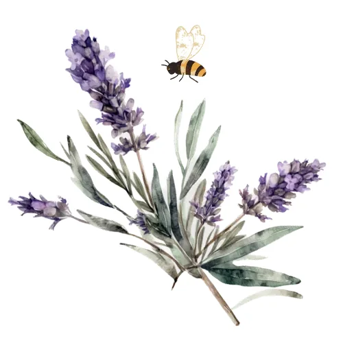

Work with Sincerely
Transformational leadership for the world of today and tomorrow. Sincerely works with leaders and organizations navigating profound change, complexity and opportunity.
- Sincerely DialogueCreate the conditions.Build trust, kind curiosity and relational coherence.
- Speaking, lecturing and learningDevelop perspective and practice.Build embodied leadership capability.
- Sincerely AdvisorySteward and sustain.Make sense, prepare, and enable leaders and teams to sustain the journey.
How we work
Transformation emerges from the innate potential of human beings and living systems. Leadership’s responsibility is to create and steward the conditions in which that potential can emerge, while staying accountable for decisions, performance and consequences.
- StoryAuthentic human and organizational stories.
- ReflectionSelf-inquiry into what the story stirs.
- DialogueDeep listening and kind curiosity, together.
- Sense-makingSystems thinking and executive judgment.
- Integration and applicationInsight brought into real decisions.
- Continued practiceSustaining the journey over time.
The Three Pillars of Transformation provide the integrating framework. The methodology is adapted to the nature and purpose of each engagement.
Create the conditions
Sincerely Dialogue
Human stories, kind curiosity, deep listening and shared inquiry.
Sincerely Dialogue draws on David Bohm’s principles of dialogue, the long-standing wisdom of Indigenous sharing-circle traditions, and the storytelling approach of The Sincerely Show. When another person’s story touches us, we become curious about what is arising in ourselves, instead of asking them to defend or explain their experience.
In leadership teams and boards, the practice strengthens psychological safety: the confidence to speak candidly, question assumptions, acknowledge uncertainty and disagree constructively. Sharing personal experience is invited, never expected.
The first-person inquiry
- What touched me?
- What am I bringing to this encounter?
- What might I be learning?
The aim is deeper human understanding, not an assessment of another person.
- Human inquiry through stories
- Authentic human stories combined with individual reflection and collective dialogue.
- Executive and board leadership dialogues
- Exploring humanity, purpose, trust, relationships and institutional responsibility.
- Leadership team dialogues
- Developing mutual understanding, empathy, deep listening and relational coherence.
Develop perspective and practice
Speaking, lecturing and learning
Keynotes, lectures and experiential learning that bring Sincerely’s intellectual foundations to life through human stories, executive experience, organizational cases and leadership application.
Keynotes and lectures
Human potential, human uniqueness in the age of AI, the essence of transformation, organizational coherence and the existential challenges of our time.
- The leadership we need now
- The bridge between worlds
- From hiding to wholeness
- Creating cultures of belonging
The introduction module
A 60-minute invitation into the Essence of Transformation and the Three Pillars, brought to life through personal experience and three distinct institutional transformations.
It opens the conversation. The learning series then explores the framework and its application in depth.
The transformational leadership learning series
Five modules, from essence to integration, for executive teams, boards and organizational leaders.
The essence of transformation
The nature of transformation, how it emerges from innate potential, and the difference between managing change and enabling transformation. Introduces the Three Pillars and relational coherence.
Leading through crisis and renewal
Leading a complex institution through profound financial and organizational challenge while facing the human consequences of crisis.
Human-centred transformation at scale
Transforming the nature of work to unlock human potential and bring greater care, advice and trusted relationships to customers, through a global pandemic.
Unlocking organizational potential and growth
Leading an established, risk-conscious institution toward the opportunity to advance dignity, independence and empowerment for millions of aging Canadians.
Integration and the journey forward
Bringing the personal and leadership journeys together toward coherence, and the continuing responsibility to enable transformation in others.
The cases draw on direct executive experience and may be adapted or anonymized for effective teaching and confidentiality.
Steward and sustain
Sincerely Advisory
Strategic experience, independent judgment and transformational leadership. Katherine personally holds a limited number of advisory relationships, in two distinct forms.
Board, CEO and C-suite strategic advisory
Independent counsel for boards, CEOs and executive teams at consequential moments of growth, transformation and complexity.
- Enterprise direction and growth
- Leadership and organizational coherence
- Governance and institutional maturity
- Living roadmap and execution
The recommended structure is a retained relationship of at least twelve months. Continuity allows trust to deepen and patterns to emerge.
Private client advisory
Highly personal, confidential counsel for individuals navigating consequential questions of identity, relationships, leadership responsibility, purpose and direction.
- Self. Identity, wholeness, meaning and purpose.
- Relationships. How personal growth affects partners, family, colleagues and friends.
- Direction. What to preserve, release, communicate and carry into the next chapter.
The client remains the authority over their choices. Katherine brings perspective, presence, informed challenge and care.
Where the work is most valuable
Engagements often begin at a threshold, where established leadership and governance systems must evolve. Katherine helps leaders connect human trust with strategy, capital, governance and execution as complexity and consequence increase.
- A founder scaling entrepreneurial success into enduring capability
- An acquisition, an integration or a change of ownership
- Preparing for succession or an eventual exit
- Technological disruption
- A strategic crossroads
The advisory relationship in practice
- Understand and make senseThe person or institution and the real issue: purpose, relationships, strategy, economics, contradictions and consequences.
- Prepare and enableClarify choices, examine assumptions, strengthen trust and capability, and prepare for difficult conversations and decisions.
- Steward and sustainResponsible follow-through as choices become lived practice, through accountability, feedback and learning.
Sincerely is founder-led. Where a mandate calls for complementary expertise, Katherine may draw on a trusted circle of leaders, advisors, facilitators and specialists, while preserving continuity, personal attention and clear accountability.
The integrity of what is entrusted
Every person has the right to their own story. Protecting what is private is inseparable from candour, independent judgment and accountability.
- Personal sovereignty
- Trust is supported by thoughtful facilitation, consistent leadership action and respectful boundaries, not by requiring vulnerability. Each person chooses what, when and how much to share.
- Confidentiality and role clarity
- The client, mandate and authority are agreed at the outset. Payment by an institution does not grant access to private conversations.
- Alongside professional care
- Sincerely’s advisory is non-clinical. It can complement, but does not replace, therapy, mental-health care, medical, legal, financial or other qualified professional services.
Our responsibility is not merely to determine what we are permitted to share, but to discern what we ought to share, and what integrity calls us to hold in confidence.
Experience in practice
Three institutional transformations, in crisis, at scale and in growth, united by higher purpose, human leadership and disciplined execution.
-
RBC Caribbean
CEO, Caribbean Banking
2013 to 2015Leading through crisis and renewal
Katherine led the Caribbean operations of a 150-year-old banking institution across 19 countries, confronting repeated substantial losses after the global financial crisis and a major acquisition. Her higher purpose was to save the bank and as many livelihoods as possible. Candour, compassion and trust anchored leadership renewal.
Results
- Sustainable profitability restored within about 24 months
- Employee engagement grew about 25% during the restructuring
- A major goodwill impairment avoided
-
RBC Canada
Executive Vice President, Regional Banking
2015 to 2022Human-centred transformation at scale
She led about 25,000 colleagues, roughly a third of RBC’s workforce, serving more than 15 million clients across Canada, and transformed the nature of their work. The roadmap connected evolving roles, technology adoption, inclusion, learning, customer relationships and the response to a pandemic.
Results
- Industry-leading customer satisfaction among Canada’s Big Five banks in six of seven years
- Belonging and inclusion measures 10 points above RBC-wide benchmarks
-
HomeEquity Bank
Chief Executive Officer
Unlocking organizational potential and growth
She led transformation at an established institution dedicated to Canadians aged 55 and older, pursuing dignity, independence and empowerment for millions of aging Canadians. Higher purpose and relational trust informed a roadmap spanning customer understanding, product and distribution, capability, funding and risk.
Results
- Asset base past C$10 billion, up from about C$8 billion before her arrival
- Mortgage originations accelerated through 2024 and 2025
Results reflect exceptional team achievement. Sources: RBC Annual Report 2022, Catalyst Honours 2022 and HomeEquity Bank public Pillar 3 regulatory disclosures.
Begin a conversation
Every engagement is tailored and starts with a conversation about the person or institution, the responsibilities at stake, and where Katherine’s experience may contribute.
Tell us a little about what you are facing. What you share is held in confidence.
